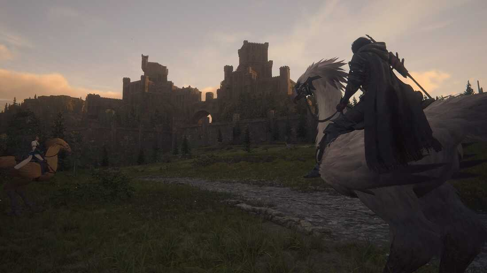

¿Qué es Final Fantasy XVI?
Explora el mundo oscuro de fantasía de Valisthea en el tan esperado RPG de acción para un jugador.
La decimosexta entrega individual de la legendaria serie Final Fantasy marca un giro oscuro en esta franquicia de RPG, con una trama compleja sobre la venganza, la lucha de poderes y una tragedia inevitable.
Final Fantasy XVI reimagina a las invocaciones icónicas de la serie como Eikons. Estas criaturas mortíferas yacen dentro de los Dominantes, hombres y mujeres que heredan su inmenso poder cuando nacen, quieran o no.
Los Eikons son los seres más fuertes de Valisthea, una tierra donde seis reinos poderosos surgieron gracias al poder de los Cristales Madre. El éter que proveen estas imponentes montañas de cristal potencia la magia que ha permitido que estas naciones prosperen durante años, pero ahora, una misteriosa Plaga amenaza con quebrantar su frágil alianza.
Juega como Clive Rosfield, el Primer Escudo de Rosaria y guardián de su hermano menor Joshua, Dominante del Eikon Fénix, en este épico RPG de acción creado por un equipo de experimentados en Final Fantasy.
Trailer del juego:
Imagenes
